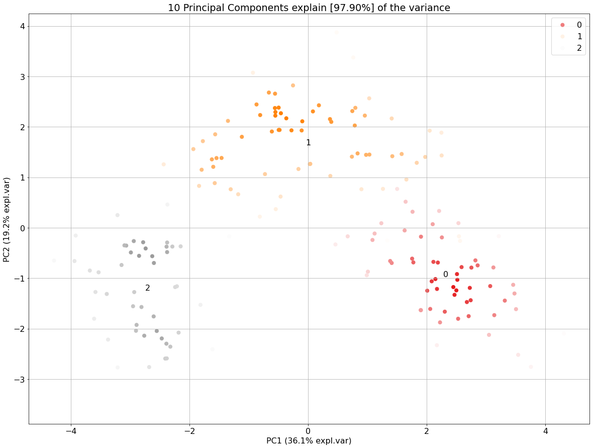
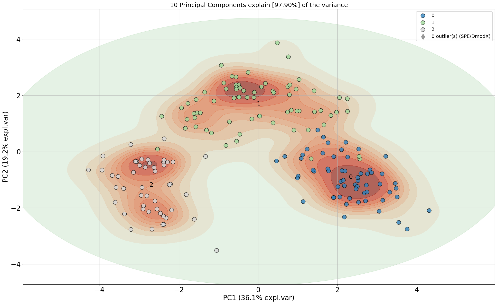
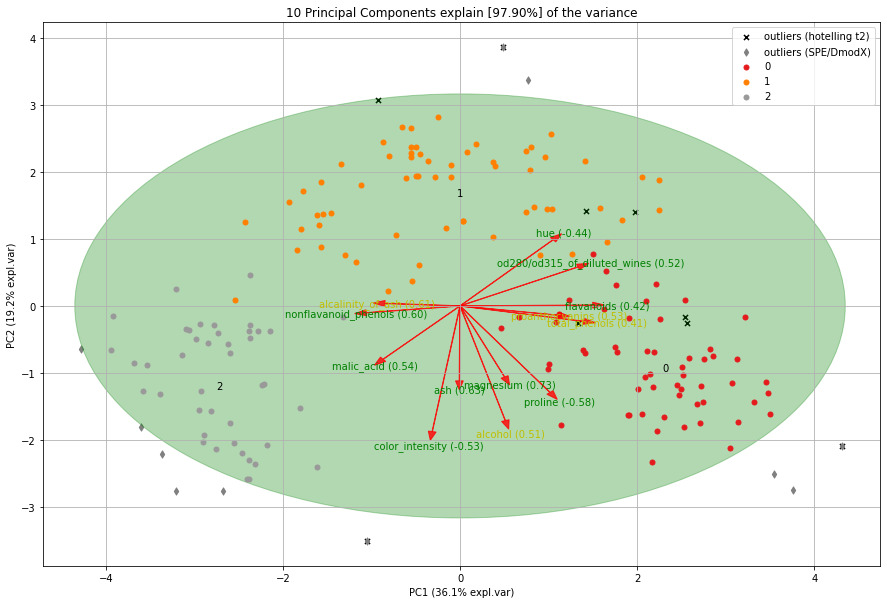
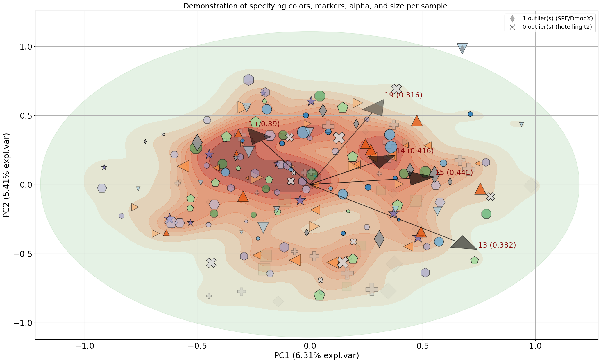

Load dataset
Let’s load the wine dataset to demonstrate the plots.
# Load library
from sklearn.datasets import load_wine
# Load dataset
data = load_wine()
X = data.data
y = data.target
labels = data.feature_names
from pca import pca
# Initialize
model = pca(normalize=True)
# Fit transform and include the column labels and row labels
results = model.fit_transform(X, col_labels=labels, row_labels=y)
# [pca] >Normalizing input data per feature (zero mean and unit variance)..
# [pca] >The PCA reduction is performed to capture [95.0%] explained variance using the [13] columns of the input data.
# [pca] >Fitting using PCA..
# [pca] >Computing loadings and PCs..
# [pca] >Computing explained variance..
# [pca] >Number of components is [10] that covers the [95.00%] explained variance.
# [pca] >The PCA reduction is performed on the [13] columns of the input dataframe.
# [pca] >Fitting using PCA..
# [pca] >Computing loadings and PCs..
# [pca] >Outlier detection using Hotelling T2 test with alpha=[0.05] and n_components=[10]
# [pca] >Outlier detection using SPE/DmodX with n_std=[2]
Scatter plot
# Make scatterplot
model.scatter()
# Gradient over the samples. High dense areas will be more colourful.
model.scatter(gradient='#FFFFFF')
# Include the outlier detection
model.scatter(SPE=True)
# Include the outlier detection
model.scatter(HT2=True)
# Look at different PCs: 1st PC=1 vs PC=3
model.scatter(PC=[0, 2])
|
 |
 |
|
|


Biplot
# Make biplot
model.biplot()
# Here again, many other options can be turned on and off
model.biplot(SPE=True, HT2=True)
|
 |

Biplot (only arrows)
# Make plot with parameters: set cmap to None and label and legend to False. Only directions will be plotted.
model.biplot(cmap=None, legend=False)
Explained variance plot
model.plot()

Alpha Transparency
fig, ax = model.scatter(alpha=1)
Markers
import numpy as np
from sklearn.datasets import make_friedman1
from pca import pca
# Make data set
X, _ = make_friedman1(n_samples=200, n_features=30, random_state=0)
# All available markers
markers = np.array(['.', 'o', 'v', '^', '<', '>', '8', 's', 'p', '*', 'h', 'H', 'D', 'd', 'P', 'X'])
# Generate random integers
random_integers = np.random.randint(0, len(markers), size=X.shape[0])
# Draw markers
marker = markers[random_integers]
# Init
model = pca(verbose=3)
# Fit
model.fit_transform(X)
# Make plot with markers
fig, ax = model.biplot(c=[0, 0, 0],
marker=marker,
title='Demonstration of specifying markers per sample.',
n_feat=5,
legend=False)
|

{kind=link}
Control color/marker/size per sample
import numpy as np
import matplotlib.pyplot as plt
import matplotlib.colors as mcolors
from sklearn.datasets import make_friedman1
from pca import pca
# Make data set
X, _ = make_friedman1(n_samples=200, n_features=30, random_state=0)
# All available markers
markers = np.array(['.', 'o', 'v', '^', '<', '>', '8', 's', 'p', '*', 'h', 'H', 'D', 'd', 'P', 'X'])
# Create colors
cmap = plt.cm.get_cmap('tab20c', len(markers))
# Generate random integers
random_integers = np.random.randint(0, len(markers), size=X.shape[0])
# Draw markers
marker = markers[random_integers]
# Set colors
color = cmap.colors[random_integers, 0:3]
# Set Size
size = np.random.randint(50, 1000, size=X.shape[0])
# Set alpha
alpha = np.random.rand(1, X.shape[0])[0][random_integers]
# Init
model = pca(verbose=3)
# Fit
model.fit_transform(X)
# Make plot with blue arrows and text
fig, ax = model.biplot(
SPE=True,
HT2=True,
c=color,
s=size,
marker=marker,
alpha=alpha,
color_arrow='k',
title='Demonstration of specifying colors, markers, alpha, and size per sample.',
n_feat=5,
fontsize=20,
fontweight='normal',
arrowdict={'fontsize': 18},
density=True,
density_on_top=False,
)
 |
3D plots
All plots can also be created in 3D by setting the d3=True parameter.
model.biplot3d()
Toggle visible status
The visible status for can be turned on and off.
# Make plot but not visible.
fig, ax = model.biplot(visible=False)
# Set the figure again to True and show the figure.
fig.set_visible(True)
fig